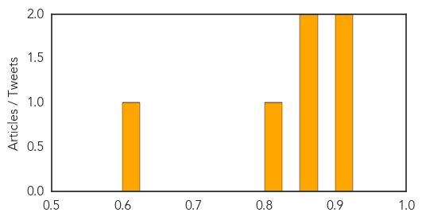
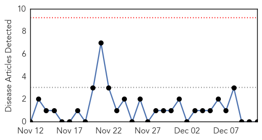
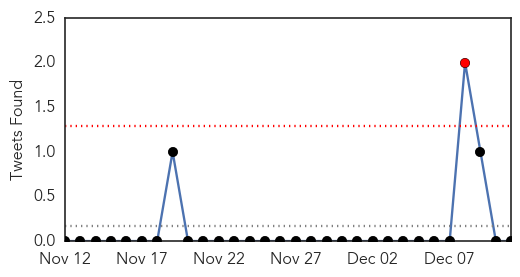

Pertussis
30-Day Web Trend
2 alerts, 0 warnings
30-Day Twitter Trend
0 alerts, 0 warnings

Article Locations

Article Confidences
Top Articles:
- 0.919
- California battles whooping cough epidemic
- 0.918
- California battles whooping cough epidemic
- 0.874
- Whooping cough hits Allegan County; Kalamazoo County doctors urged to treat first, confirm later
- 0.868
- Whooping cough cases rise nationally, not locally
- 0.825
- Traverse City disease outbreaks show threat of undervaccination
- 0.611
- California Battling Its Worst Whooping Cough Epidemic In 70 Years « CBS Sacramento
Top Tweets:
-
No tweets found for Dec 11, 2014
MERS
30-Day Web Trend
0 alerts, 0 warnings

30-Day Twitter Trend
0 alerts, 0 warnings

Article Locations

Article Confidences

Top Articles:
-
No articles found for Dec 11, 2014
Top Tweets:
-
No tweets found for Dec 11, 2014